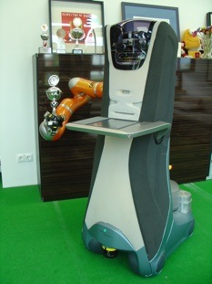
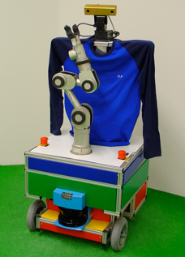

The Robot “Jenny”
Jenny is based on an omni-wheeled mobile platform called Care-O-Bot. The Care-o-bot has been developed by the Fraunhofer Institute for Manufacturing Engineering and Automation (IPA) in Stuttgart, Germany. The Care-O-bot 3 is equipped with a 7 DoF manipulator, a three-fingered hand and an omnidirectional platform, which is powered by 8 motors (two motors per wheel: one for the rotation axis, and the other for drive). The sensor head contains two AVT Pike 145 C Cameras, which are used for stereo processing, a MESA Swissranger 4000 time-of-flight camera, and a Kinect camera. Two SICK S300 laser scanners and one Hokuyu URG-04LX laser scanner are used for mapping and navigation.
More details can be found in our Team Description Paper.
The Robot “Johnny Jackanapes”
Johnny is based on a modular mobile platform called VolksBot which has been designed specifically for rapid prototyping and robot applications in education, research and industry. The VolksBot system is developed, manufactured and sold by the Fraunhofer Institute for Intelligent Analysis and Information Systems (IAIS). It allows for easy access to and replacement of components such as motors, batteries and electronics.
Sensors and Actuators:
- ✴Neuronics Katana 6M180 robot arm:
It is equipped with six motors providing five degrees of freedom w.r.t. the gripper’s position and orientation in its reachable workspace. Its operation radius is 60 cm. The sixth motor is used to open and close the two-fingered gripper, which is equipped with infrared reflectance as well as force sensors. The arm can handle a maximum payload of 500 g and is mounted in a way to provide good reachability and maneuverability.

✴SICK LMS 200 laser range finder:
It is the primary sensor for perceiving environmental structures. It provides accurate range measurements to surrounding objects intersecting the 2D scan plane in an angular range of 180°. We use an angular resolution of 1° and a continuous sending mode over RS422. In this setup, the laser range finder delivers 2D scans containing 181 range measurements with a frequency of 75Hz.
✴Volksbot Motor Controller (VMC):
The drive unit used for locomotion uses a differential drive with two actively driven wheels, powered by two 150W motors, and two castor wheels to enhance rotating and stability under load. The robot’s maximum velocity is 2m/s. The overall platform size is (51—51—120)cm (W—L—H) and its weight is 60 kg.
- ✴SICK LMS 200 laser range finder:
It is the primary sensor for perceiving environmental structures. It provides accurate range measurements to surrounding objects intersecting the 2D scan plane in an angular range of 180°. We use an angular resolution of 1° and a continuous sending mode over RS422. In this setup, the laser range finder delivers 2D scans containing 181 range measurements with a frequency of 75Hz.
- ✴Volksbot Motor Controller (VMC):
The drive unit used for locomotion uses a differential drive with two actively driven wheels, powered by two 150W motors, and two castor wheels to enhance rotating and stability under load. The robot’s maximum velocity is 2m/s. The overall platform size is (51—51—120)cm (W—L—H) and its weight is 60 kg.
- ✴Pan-Tilt System:
It is used to control the camera view, especially during the object grasping process or person identification process.
- ✴Bumble Bee Camera:
This stereo camera is used for detecting object and measuring the object distance from the robot.
- ✴Logitech Web Camera:
It is a standard web camera. It is used for detecting and identifying person.
Software Components:
Our system consists of several Autonomous Components. These components interact with each other to perform the desired actions. These components are integrated by using a communication middleware named ICE (Internet Communication Engine).
- ✴Navigation and Mapping Component:
Its task is to map and navigate the robot in the environment. It provides the functionality for autonomously building internal environment representations and localizing the robot in the arena by means of an efficient approach to SLAM, planning and following paths, tracking and following human guides as well as searching the environment and approaching target poses. It is split into three components: a perception component or acquiring and processing sensor measurements, an actuation component for controlling the robot’s effectors and a task execution component implementing a multi-layered architecture and a main control loop linking perception and actuation.
- ✴Object Recognition and Manipulation Component:
Its task is to recognize a known object in the environment, to pick it up and to place it somewhere. The object is known in advance and the manipulator has to be able to grasp the object so the size and the weight are limited. The object has to be in the workspace of the robot and static in the environment.
- ✴Speech Recognition & Output Component:
The component is one of two components that responsible for Human-Robot Interaction (HRI). The core of the voice-based HRI components is the dialog system that handles the communication between the robot(s) and human users. In the dialog system, communication can be initiated from both a human user giving a spoken command and the control architecture, e.g. for requesting a confirmation or more information about an assigned task. For the speech synthesis component, we uses the MAC OS X Leopard Speech Synthesis API.
- ✴Person Identification Component:
The main task of this component is for detecting person and identifying her/him. The detected persons are stored in the database, that is used for identifying them later on.
- ✴Task Scheduler:
It is used for decomposing sequence of actions, executing and monitor them. In case of any failure during executing an action, it will try to redo the action with an alternative action before finally throw an error message. It performs system check, before executing some task. Thus any failure in some components can be detected earlier.
More detail can be read in our latest tdp.